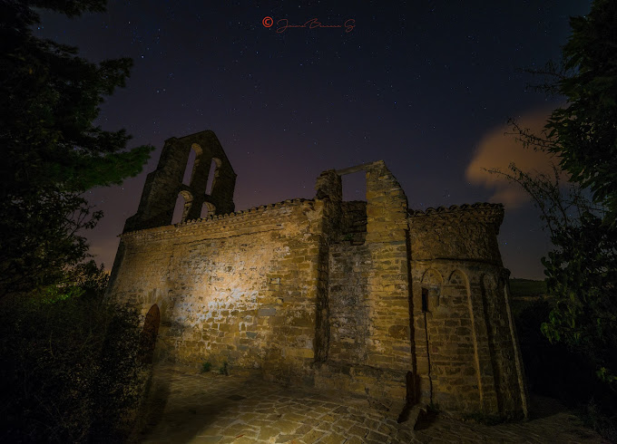
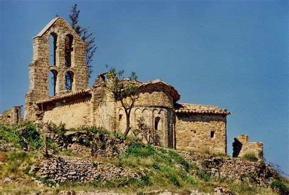
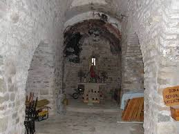
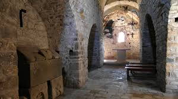
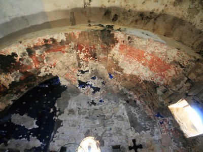
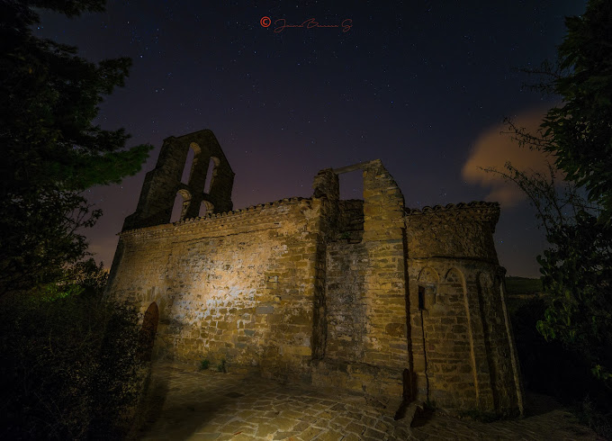
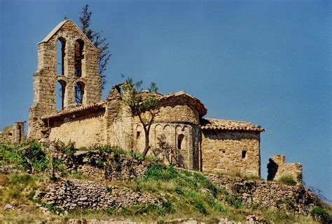
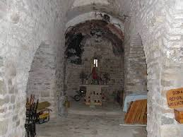
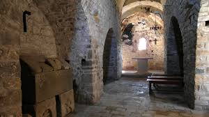
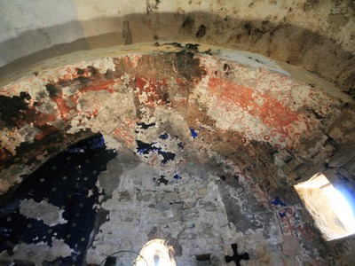

Història
Sant Pere de Vallhonesta és una antiga església romànica situada a Catalunya. La seva història es remunta a l'edat mitjana i ha estat un punt important per a la comunitat local durant segles.
Tot i estar parcialment en ruïnes, encara es poden observar elements arquitectònics destacables. És un lloc d'interès històric i cultural, visitat per amants del patrimoni i excursionistes.
Galeria
 









Imatge 360º
Vídeo 360º
Ubicació
Agraïments